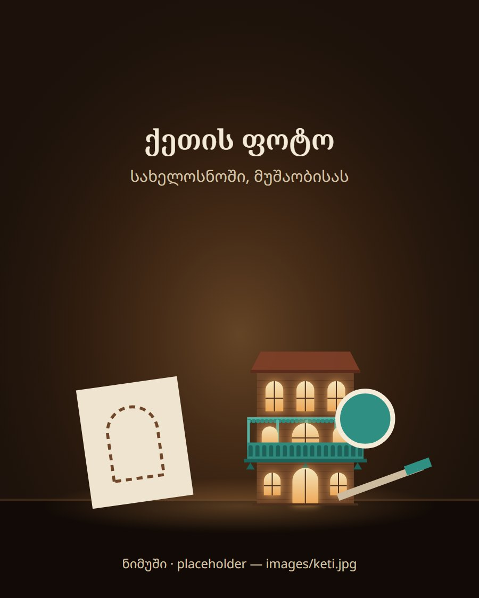

ქალაქი, რომელიც
ხელით კეთდება

ხელოვნებათმცოდნე, რომელმაც ხელობა თავად ისწავლა
ქეთი (ქეთევან) ნოზაძე განათლებით ხელოვნებათმცოდნეა, ხელობა კი თავად ისწავლა. Lampino 2019 წელს დააარსა, პირველი შვილის დაბადების შემდეგ.
სანათი და მიძღვნა ქალაქს
ძველი თბილისის ჩუქურთმიანი აივნები, კარები, ვიტრაჟები და კოშკურები მის ნამუშევრებში ბრუნდება. ყველა ნივთი ერთდროულად მოქმედი სანათიცაა და ქალაქის კულტურის პატივისცემაც.
მასალა: ხე, დეკორატიული ცემენტი, მინა, ქსოვილი, ლითონი, საღებავი.